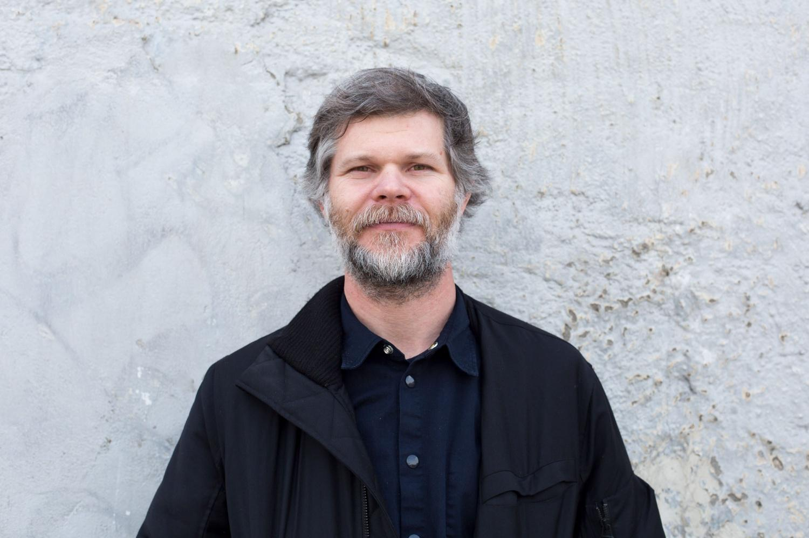

Casey Reas es un artista, programador y educador reconocido por su trabajo en el desarrollo del arte generativo. Su práctica se basa en la creación de sistemas que, a partir de reglas definidas, producen imágenes y comportamientos visuales autónomos. Este enfoque desplaza la idea tradicional de obra terminada hacia procesos abiertos y en constante evolución.
Su trabajo se centra en la relación entre instrucciones, ejecución y resultado. A través del uso del código, construye estructuras que permiten explorar variaciones infinitas dentro de un mismo sistema. De este modo, cada ejecución puede dar lugar a una experiencia visual distinta. Además de su producción artística, ha tenido un rol clave en la difusión del pensamiento computacional dentro del arte contemporáneo. Su enfoque promueve la comprensión del código como un medio expresivo, accesible y profundamente creativo.
“Una obra puede ser definida como un sistema y ejecutada en múltiples formas.” — Casey Reas

El enfoque de Casey Reas se basa en la creación de instrucciones que definen comportamientos visuales.
En lugar de diseñar una imagen de forma directa, desarrolla algoritmos que determinan cómo los elementos se relacionan, se mueven y evolucionan en el tiempo. Este método convierte al código en el núcleo del proceso creativo. A partir de reglas simples, sus sistemas pueden generar resultados complejos e impredecibles. Esta lógica permite explorar la emergencia, donde patrones y formas surgen de la interacción entre componentes.
El resultado es una obra que no está completamente controlada, sino que se desarrolla dentro de un marco definido.

En la práctica de Reas, el artista asume el rol de programador. En lugar de intervenir directamente sobre la imagen final, diseña el conjunto de instrucciones que dará lugar a múltiples resultados posibles.
Este cambio de rol implica una forma distinta de pensar el proceso creativo. La autoría se desplaza hacia el diseño del sistema, mientras que la ejecución introduce elementos de autonomía y sorpresa en la obra.
El trabajo de Casey Reas se fundamenta en la idea de que una obra puede ser entendida como un sistema de reglas. Estas reglas definen las posibles interacciones entre los elementos visuales, permitiendo que la obra se genere a partir de su ejecución.
Este enfoque introduce la variación como un elemento central. Cada vez que el sistema se ejecuta, puede producir un resultado diferente, lo que transforma la noción de originalidad y repetición en el arte digital.